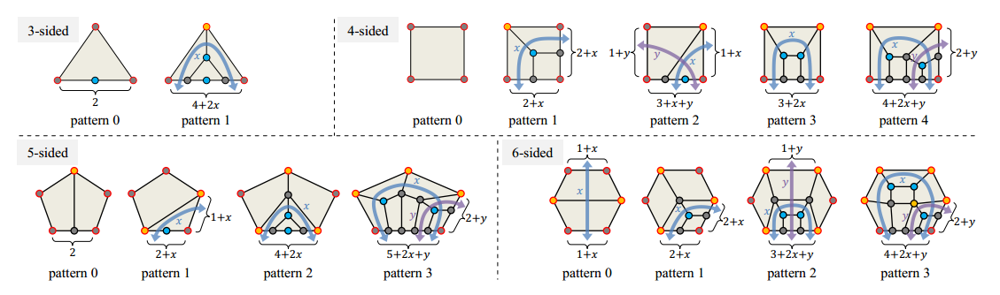

操作
吸附到顶点
绘制边缘流边界时，按住 Ctrl 键捕捉到顶点。
吸附路径
绘制边缘流边界时，按住 Ctrl 和 Shift 即可捕捉路径。
吸附至表面
按 S 键切换是否捕捉到物体表面。
启用捕捉背面
按 V 键切换是否捕捉到与法线方向相反的表面。
绘制到对称轴上
按 M 键切换是否在 yz 平面上绘制。绘制边缘流边界后，此选项将自动设置为禁用，您可以按 ctrl+M 保持启用状态。
更改分段数
当您将鼠标悬停在边缘流边界上时，按 ctrl + 鼠标滚轮可以更改该段。
切换形状
当您将鼠标悬停在环路上时，您可以按 T 来更改模式约束以获取特定形状。
按B键切换是否跳过无解的形状，开启此选项后，切换时会自动跳过无解的形状。
改变求解器约束（填充和附加边缘流）
当您将鼠标悬停在环路上时，您可以按 shift+鼠标滚轮来更改边界的填充。
使用 Ctrl + x,y,z 减少附加边流的数量，使用 Shift + x,y,z 增加附加边流的数量。
改变图案旋转
当您将鼠标悬停在环路上时，您可以按 R 为解算器添加旋转约束。
求解器建议
当解决方案不能用你的约束条件解决时，会有一个变化的片段建议来指导你得到一个可行的解决方案，这个建议是求解器猜测的，并且是解决方案之一，而不是唯一的。
平滑网格
当将鼠标悬停在已生成的网格的循环上时，按 Shift + 1 2 3 可使用三种算法来平滑网格。
最后第三个是按法线方向平滑。这对于平滑表面很有用。
Fix Normal
When you hovering a Loop with a generated mesh, press i to let the faces normal toward you.
可用的补丁图案
这是图案形状的修补。通常，图案 0 是最干净的。其他图案由于边缘数量而有所妥协。为了获得最干净的拓扑形状，请选择图案 0。
